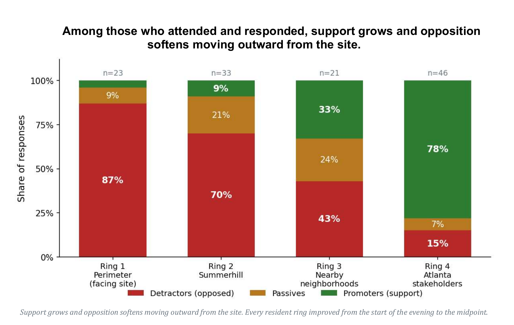

Summerhill participants overwhelmingly opposed
Among the Summerhill attendees who answered the poll—including both residents facing the site in Ring 1 and other Summerhill residents in Ring 2—the result was overwhelming: 43 detractors, 9 passives, and only 4 promotors.

Recasting the Opposition
“There is real, concentrated opposition — smaller in number but high in intensity — centered among the residents most directly adjacent to the site. Their concerns are legitimate and specific, and they are the voices most likely to be present and vocal at every session. A central design goal for the engagement is to ensure the broad, quieter majority is heard alongside the concentrated, louder minority — so the final picture reflects the whole community, not only those most mobilized.”
“Public meetings tend to draw those most motivated to attend, on any side of an issue. The results are a genuine and valuable snapshot of the room, and they should be read that way: as the input of engaged participants, not as a measure of where the entire community stands.”
“Most of the expressed opposition — by volume, a clear majority — concerns things design, engineering, and continued engagement can address. That is genuinely encouraging. But a smaller, sincere core is fundamental and will not be designed away, and saying so plainly is what makes the rest credible. The practical implication: the highest-leverage work is resolving the design-addressable concerns (green space, parking, traffic, stormwater) visibly and well, while engaging the process concerns through follow-through — and accepting that a portion of principled opposition will persist regardless.”
This last passage clearly shows the issue with this session. It divides opposition into those with concerns that can be managed through design and a smaller core that will simply “persist regardless”. That framing leaves no category in which the community’s answer changes the project’s location or stops it. Residents are invited to modify a predetermined outcome, not to decide whether that outcome should happen on their public land.
Alternate Interpretations
SNDC (Summerhill Neighborhood Development Corporation). Leadership indicated that most of SNDC's residents are supportive of the project, and noted that this constituency was largely not present at the meeting — an important counterweight to attendee sentiment. SNDC has been a constructive channel to the broader legacy-resident community.
Longtime-resident perspective. A respected longtime resident and community figure has engaged constructively throughout — focused on ensuring the process is fair, well-communicated, and genuinely responsive, and on shaping the project to benefit the neighborhood rather than on opposing it outright.
ONS (Organized Neighbors of Summerhill). ONS leadership has been actively engaged and constructive — working to ensure residents are heard through official channels, counter misinformation, and keep the process orderly, while advocating for meaningful accommodations from THE TRACK CLUB. ONS observed that a small, organized opposition is highly motivated to attend every meeting, which can make attendee sentiment appear more uniformly negative than the neighborhood as a whole.
Why this matters Taken together, the leader interviews suggest that Summerhill sentiment is more divided — and more open — than the meeting attendance alone indicates. The most mobilized voices were opposed and present; a quieter base of supportive residents was largely absent. This is the single most important context for reading the numbers fairly.”
The implication of this section is striking. The report does not treat the level of opposition recorded among Summerhill participants as evidence that the site itself should be reconsidered. Instead, it is minimized by placing it within a context that allows to the project to proceed.
At the same time, the report discounts the measured opposition by invoking a constituency that did not attend: a “broad, quieter majority” and a “quieter base of supportive residents.” It presents no survey measuring that supposed majority. Instead, the claim rests on interviews with neighborhood leaders offered as a counterweight to the people who actually participated.
Atlanta’s leaders promise a different way
Our elected leaders have publicly advocated for community engagement to be bottom-up, attentive, and shared. For a process that values community input and provides them a meaningful role in shaping their neighborhoods.
“I support a bottom-up approach that involves having a substantial community engagement process.”
“I want to hear from families, students, teachers, administrators and the community about what they want to see from APS. Your voice and input are extremely important. I am always ready to learn and listen.”
“Today, we can address those wrongs through policy choices that respect residents and lead to genuine partnerships that recognize the wisdom, strength and agency already present in these neighborhoods.”
The old way—or the new way?
The current process has characteristics familiar from the old “Atlanta Way”: institutions advance a preferred project, while the people who will live with it are asked how its impacts can be reduced. Here, even after the clearest measured neighborhood response was overwhelmingly negative, the commissioned report focuses primarily on how opposition can be addressed, accommodated or placed in context.
Our politicians are saying that there is a new approach. Decisions should be bottom-up, public voices should matter, and residents should help shape the future of their own neighborhoods. The community has been clear that this is what it wants and Our Cheney is working to provide it.
Ultimately, the question is not track or no track. The question is if things truly have changed in Atlanta.